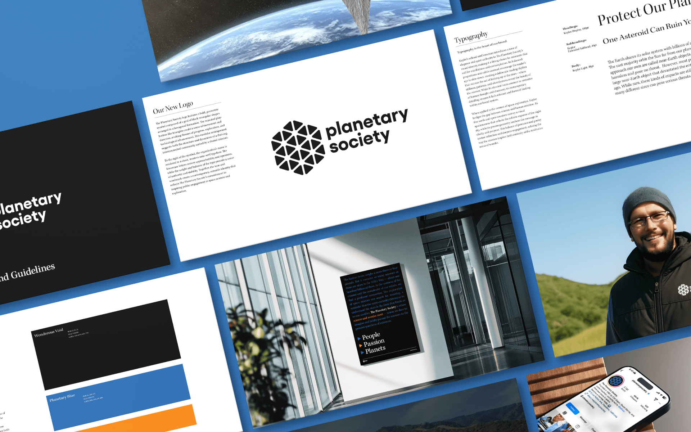

We work with a select few clients who believe in creating something memorable together. If this sounds like you, click the button below to tell us about your project. We read every form submission.
→ Start a project
The Planetary Society is a non-profit advocacy organization for space exploration, based in Pasadena, California. The identity expands the audience beyond enthusiasts — exploring the profound human experience of our relationship to the cosmos. A primary serif typeface gives every touchpoint an elevated, timeless feeling. Removing “The” from the name created a cleaner shorthand.
A special campaign style was designed for the Society’s 45th anniversary, including a custom modular variable typeface inspired by planetary orbits. The anniversary identity envisions a weekend celebration on Catalina Island for members and donors.

Planetary Society posters at the nearby Paseo Colorado outdoor mall in Pasadena, California.

The logo was inspired by LightSail — a member-funded invention by The Planetary Society enabling spacecraft to propel using only sunlight.

Overview of the identity system. A serif typeface breaks the retro-sci-fi standard in aerospace, giving all messaging a timeless, contemplative quality.




45th Anniversary Campaign
The 45th anniversary identity carries a distinct look and typographic voice. The highlight of the year would be a retreat on Catalina Island for members and donors, “Under the Stars.”

Planetary Society Sans is a variable weight font designed as the typographic voice for the 45th anniversary. The modular typeface is inspired by planetary orbits and creates dynamic compositions at large scale.


We work with a select few clients who believe in creating something memorable together. If this sounds like you, click the button below to tell us about your project. We read every form submission.